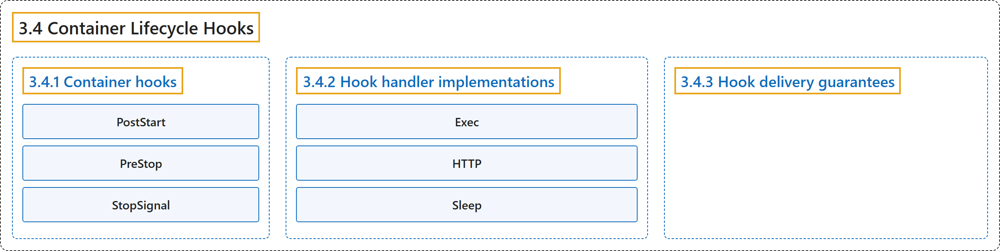

3.4 Container Lifecycle Hooks
Classification

Glossary
| Term | Definition | 中文翻译 | Source |
|---|---|---|---|
| 3.4 Container Lifecycle Hooks 容器生命周期钩子 |
"Analogous to many programming language frameworks that have component lifecycle hooks, such as Angular, Kubernetes provides Containers with lifecycle hooks." | 类似于许多带有组件生命周期钩子的编程语言框架（例如 Angular），Kubernetes 为容器提供生命周期钩子。 | The Kubernetes Authors, n.d., "Overview", para. 1 |
| 3.4.1 Container hooks 容器钩子 |
"There are two hooks that are exposed to Containers:" | 有两个钩子会暴露给容器： | The Kubernetes Authors, n.d., "Container hooks", para. 1 |
| PostStart PostStart |
"This hook is executed immediately after a container is created." | 这个钩子会在容器创建后立即执行。 | The Kubernetes Authors, n.d., "Container hooks", para. 3 |
| PreStop PreStop |
"This hook is called immediately before a container is terminated due to an API request or management event such as a liveness/startup probe failure, preemption, resource contention and others." | 这个钩子会在容器被终止之前立即调用，起因是 API 请求或管理事件，例如存活/启动探针失败、抢占、资源争用等。 | The Kubernetes Authors, n.d., "Note:", para. 3 |
| StopSignal StopSignal |
"The StopSignal lifecycle can be used to define a stop signal which would be sent to the container when it is stopped." | StopSignal 生命周期可用来定义一个停止信号，它会在容器停止时发送给容器。 | The Kubernetes Authors, n.d., "Note:", para. 6 |
| 3.4.2 Hook handler implementations 钩子处理程序的实现 |
"Containers can access a hook by implementing and registering a handler for that hook." | 容器可以使用某个钩子，方式是为该钩子实现并注册一个处理程序。 | The Kubernetes Authors, n.d., "Hook handler implementations", para. 1 |
| Exec Exec |
"Exec - Executes a specific command, such as pre-stop.sh, inside the cgroups and namespaces of the Container." |
Exec：执行特定命令，例如 pre-stop.sh，在容器的 cgroup 和命名空间内运行。 |
The Kubernetes Authors, n.d., "Hook handler implementations", para. 2 |
| HTTP HTTP |
"HTTP - Executes an HTTP request against a specific endpoint on the Container." | HTTP：执行一次 HTTP 请求，目标是容器上的特定端点。 | The Kubernetes Authors, n.d., "Hook handler implementations", para. 3 |
| Sleep Sleep |
"Sleep - Pauses the container for a specified duration." | Sleep：让容器暂停，持续指定的时长。 | The Kubernetes Authors, n.d., "Hook handler implementations", para. 4 |
| 3.4.3 Hook delivery guarantees 钩子交付保证 |
"Hook delivery is intended to be at least once, which means that a hook may be called multiple times for any given event, such as for PostStart or PreStop." |
钩子交付的设计目标是 至少一次，即钩子对任一事件都可能被调用多次（例如 PostStart 或 PreStop）。 |
The Kubernetes Authors, n.d., "Hook delivery guarantees", para. 1 |
References
The Kubernetes Authors. (n.d.). Container Lifecycle Hooks. Kubernetes Documentation. Retrieved October 31, 2026, from https://kubernetes.io/docs/concepts/containers/container-lifecycle-hooks/